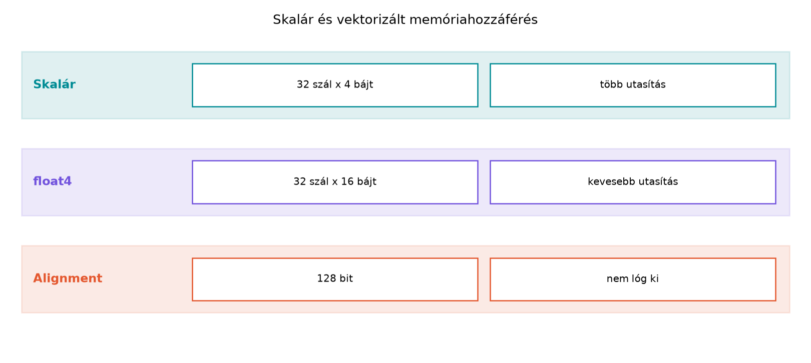

float4 és int4
típusokA modern GPU-k memória-alrendszere rendkívül nagy sávszélesség
elérésére képes, de ennek kihasználásához elengedhetetlen, hogy a
memóriahozzáférések hatékonyan, a hardver számára optimális mintázatban
történjenek. A globális memória coalescingról szóló alfejezetben (11.1)
láttuk, hogy a skaláris hozzáférések (float,
int) hogyan illeszkednek a warp-szintű tranzakciókhoz és a
coalescing elvéhez. Ebben az alfejezetben egy lépéssel tovább megyünk:
bevezetjük a CUDA által biztosított vektoros típusokat, mint a
float4 és int4, amelyek lehetővé teszik, hogy
egyetlen utasítással több elemet töltsünk be vagy tároljunk.
A vektorizált memóriaműveletek elsődleges előnye a memóriavezérlőre
nehezedő utasításnyomás csökkentése. Ahelyett, hogy minden egyes skalár
elemhez külön betöltő utasítást (LDG) adnánk ki, egyetlen
vektoros utasítással (LDG.128 vagy PTX szinten
ld.global.v4.f32) négy elemet mozgatunk. Ez csökkenti az
utasításkibocsátás és a Load/Store Unit (LSU) terhelését, javítja az
utasításszintű párhuzamosságot (ILP), és gyakran kulcsfontosságú a
memória-sávszélesség maximumának eléréséhez olyan egyszerű,
memória-korlátos kernelekben, mint a vektoros másolás vagy a SAXPY
művelet.
A CUDA C++ a következő beépített vektoros típusokat kínálja a gyakori skalár típusokhoz:
char4, uchar4, short4,
ushort4, int4, uint4,
longlong4, ulonglong4float2, float4double2, double4A leggyakrabban használt típusok a float4 (16 bájt, 4
darab 32 bites lebegőpontos szám) és az int4 (16 bájt, 4
darab 32 bites egész), mivel ezek pontosan illeszkednek a GPU-k által
támogatott legszélesebb, 128 bites memóriatranzakciókhoz. A vektoros
típusok egyben struktúrák is, amelyek .x, .y,
.z és .w mezőkkel rendelkeznek, így az elemek
közvetlenül elérhetők.
// CUDA C++
float4 v;
v.x = 1.0f;
v.y = 2.0f;
v.z = 3.0f;
v.w = 4.0f;
int4 indices = {1, 2, 3, 4};
int4 indices2 = make_int4(5, 6, 7, 8);A vektorizált memóriahozzáférések hatékonyságának és helyes
működésének alapfeltétele a megfelelő alignment, azaz
igazítás. A float4 típus mérete 16 bájt. A hardveres
memóriavezérlő akkor tud egyetlen 128 bites tranzakcióban egy
float4 értéket kiszolgálni, ha a mutató címe 16-tal
osztható. Ez a 16 bájtos igazítási követelmény.
Mi történik, ha a mutató nincs 16 bájthoz igazítva?
A vektoros (float4, int4,
ld.global.v4) hozzáférés természetes igazítást követel meg:
a címnek a hozzáférés méretének (16 bájt) többszörösének kell lennie. A
hardver a nem igazított vektoros hozzáférést nem bontja
fel kisebb tranzakciókra, ezért az nem „lassabb”, hanem hibás:
nem definiált viselkedést okoz, jellemzően
misaligned address hibát
(cudaErrorMisalignedAddress), amelyet a
compute-sanitizer (memcheck) jelez, és amely
után a CUDA-környezet használhatatlan lehet. Az igazított 16 bájtos
hozzáférés sosem lép át egy 128 bájtos cache-line határt, ezért a
„tranzakciók széttöredezése” sem igazított vektoros hozzáférésnél lép
fel, hanem a skalár, eltolt hozzáférésnél (lásd a coalescing
alfejezetet).
Ezért vektorizálás előtt a címet ellenőrizni kell, például:
// CUDA C++ (host oldal)
bool aligned16 = (reinterpret_cast<uintptr_t>(ptr) % 16) == 0;Ha a cím nem igazított, skalár „fej” (az igazított címig) és skalár „farok” kell, a közbeni rész pedig vektorizálható.
A cudaMalloc függvény az esetek túlnyomó többségében
256 bájtos igazítást garantál minden lefoglalt
memóriaterület kezdőcímére. Ez bőven kielégíti a float4 16
bájtos igazítási követelményét. A problémák akkor kezdődnek, amikor nem
a kezdőcímtől indulunk, vagy amikor más adatstruktúrákat használunk:
float4
mező van, a struktúra méretét és elrendezését a fordító automatikusan
úgy igazítja, hogy a float4 mező címe 16-tal osztható
legyen. Ezt explicit módon is jelezhetjük a __align__(16)
specifikátorral.char* vagy std::byte* mutatóból
float4* mutatót készítünk nem 16-tal osztható
eltolással.Helytelen példa (nem igazított eltolás):
// CUDA C++
// buf egy char* mutató, amely cudaMalloc-ból származik
char* raw_ptr = ...;
// Eltolás 4 bájttal: garantáltan nem 16-tal osztható
float4* vec_ptr = reinterpret_cast<float4*>(raw_ptr + 4);
// HIBÁS: a hozzáférés nem igazított (16 bájtos igazítás kell) -> nem definiált
// viselkedés, tipikusan `misaligned address` hiba, nem csupán lassulás!
float4 val = vec_ptr[threadIdx.x];Helyes példa (igazított kezdőcím):
// CUDA C++
float* raw_ptr = ...;
int offset = 4; // elemekben, 4 * 4 = 16 bájt -> igazított
float4* vec_ptr = reinterpret_cast<float4*>(raw_ptr + offset);
float4 val = vec_ptr[threadIdx.x];Hasonlítsuk össze egy egyszerű, memória-korlátos kernel skalár és
vektorizált változatát. Vegyünk egy SAXPY műveletet
(Y[i] = a * X[i] + Y[i]), amely tipikus példa a
memória-sávszélesség által korlátozott feladatra.
Skalár kernel:
// CUDA C++
__global__ void saxpy_scalar(float* y, const float* x, float a, int n) {
int i = blockIdx.x * blockDim.x + threadIdx.x;
if (i < n) {
y[i] = a * x[i] + y[i];
}
}Ebben a verzióban minden szál egyetlen 32 bites elemet kezel. Bár a
hozzáférések coalescing szempontjából tökéletesek lehetnek (a szomszédos
szálak szomszédos címeket érnek el), minden egyes y[i] és
x[i] hozzáférés külön 32 bites betöltő/tároló utasítást
igényel. Egy szál két betöltést (x, y) és egy tárolást (y) végez, ami
három memóriaművelet-utasítást jelent szálanként.
Vektorizált kernel:
// CUDA C++
__global__ void saxpy_vectorized(float4* y4, const float4* x4, float a, int n4) {
int i = blockIdx.x * blockDim.x + threadIdx.x;
if (i < n4) {
float4 y_val = y4[i];
float4 x_val = x4[i];
y_val.x = a * x_val.x + y_val.x;
y_val.y = a * x_val.y + y_val.y;
y_val.z = a * x_val.z + y_val.z;
y_val.w = a * x_val.w + y_val.w;
y4[i] = y_val;
}
}A vektorizált verzióban minden szál egy 16 bájtos
(float4) elemet kezel. A y4[i] és
x4[i] kifejezések egy-egy 128 bites vektoros betöltést
generálnak (LDG.E.128), a y4[i] = y_val pedig
egy 128 bites vektoros tárolást (STG.E.128). Egy szál így
továbbra is három memóriaműveletet végez (két betöltés, egy tárolás), de
mindegyik négyszer annyi adatot mozgat. A
memóriavezérlő szempontjából ez azt jelenti, hogy ugyanannyi utasítással
négyszeres hasznos munkát végez.
A vektorizált betöltések közvetlen hatása a memória-tranzakciókra is jelentős. Egy 32 szálból álló warp esetén:
Ugyanahhoz az 512 bájthoz a skalár változat négy warp-utasítást igényel (négyszer 4 szektor), a vektorizált egyet (16 szektor): a szektorok száma azonos, a DRAM-forgalom ugyanaz. A nyereség a kiadott memóriautasítások és az LSU-kérések számának csökkenése, nem a DRAM-tranzakcióké.
A CUDA beépített vektoros típusaihoz (float4,
int4 stb.) nem tartozik aritmetikai
operátor: a float4 a, b; float4 c = a + b; kifejezés
fordítási hibát ad. Az operátorokat vagy a CUDA Samples
helper_math.h fejlécéből vesszük át, vagy saját
túlterheléssel definiáljuk; a legegyszerűbb a .x,
.y, .z, .w mezők közvetlen
kezelése, ahogy a fenti SAXPY kernel is teszi.
A vektorizált típusok használata nem csak a memóriarendszerre van hatással, hanem közvetlenül befolyásolja a kernel erőforrásigényét és ezen keresztül az occupancy-t (foglaltságot) is.
Regiszterhasználat növekedése: Egy
float4 érték tárolása négy 32 bites regisztert foglal.
Amikor a saxpy_vectorized kernelben a y_val és
x_val változókat deklaráljuk, azok összesen 8 regisztert
foglalhatnak el, szemben a skalár verzió 2 regiszterével. A több
regiszter használata csökkentheti a maximálisan elérhető occupancy-t,
mivel minden SM-en korlátozott számú regiszter áll rendelkezésre.
Az utasításszintű párhuzamosság (ILP) növekedése:
Ezzel szemben a vektorizált kernel jelentősen több független műveletet
tesz lehetővé szálanként. A .x, .y,
.z, .w mezők számításai között nincs függőség,
így a hardver képes ezeket a műveleteket párhuzamosan (vagy legalábbis
átfedésben) végrehajtani. Ez a magasabb ILP képes elfedni az alacsonyabb
occupancy negatív hatásait, különösen memória-korlátos kernelekben, ahol
a memóriavárakozási késleltetés elrejtése a cél.
A mérlegelés szabálya: A vektorizálás szinte mindig előnyös memória-korlátos (memory-bound) kernelekben, ahol a kód a memória-alrendszerre vár, és elegendő tranzakció áll rendelkezésre a késleltetés elrejtéséhez. Ilyenkor az alacsonyabb occupancy ellenére a megnövekedett utasítás-hatékonyság és ILP a sávszélesség jobb kihasználásához vezet. Számítás-korlátos (compute-bound) kernelekben azonban, ahol az FP32 vagy FP64 egységek telítettek, a vektorizálás regiszternyomása káros lehet, mert csökkenti az occupancy-t anélkül, hogy a számítási átvitelt javítaná. Ilyenkor a skalár műveletek és a magasabb occupancy a kedvezőbb.
Ebben a laborban egy egyszerű, de rendkívül tanulságos feladatot valósítunk meg: memória másolást. A másolás tisztán memória-korlátos feladat, így tökéletesen demonstrálja a vektorizálás hatását a sávszélességre.
Környezet és konfiguráció: - GPU:
NVIDIA RTX 3060 (Ampere, Compute Capability 8.6) -
Driver: 535.154.05 - CUDA Toolkit:
12.4 - Operációs rendszer: Ubuntu 22.04 LTS -
Fordítóparancs:
nvcc -O3 -arch=sm_86 -o memcopy_vec memcopy_vec.cu
CUDA C++ forráskód:
// CUDA C++ (C++17), nvcc -O3 -arch=sm_86
#include <cstdio>
#include <cstdlib>
#include <cmath>
#include <cuda_runtime.h>
#define CUDA_CHECK(call) do { \
cudaError_t err_ = (call); \
if (err_ != cudaSuccess) { \
fprintf(stderr, "CUDA error at %s:%d: %s\n", __FILE__, __LINE__, \
cudaGetErrorString(err_)); \
exit(EXIT_FAILURE); \
} \
} while (0)
// Skalár kernel: egyszerű másolás
__global__ void copy_scalar(float* dst, const float* src, int n) {
int i = blockIdx.x * blockDim.x + threadIdx.x;
if (i < n) {
dst[i] = src[i];
}
}
// Vektorizált kernel: float4 alapú másolás (n4 = n / 4; a farkat a host kezeli)
__global__ void copy_vectorized(float4* dst4, const float4* src4, int n4) {
int i = blockIdx.x * blockDim.x + threadIdx.x;
if (i < n4) {
dst4[i] = src4[i];
}
}
// Farok kernel: az n % 4 maradék elem skalár másolása
__global__ void copy_tail(float* dst, const float* src, int start, int n) {
int i = start + blockIdx.x * blockDim.x + threadIdx.x;
if (i < n) {
dst[i] = src[i];
}
}
// Egy kernel mérése cudaEvent-ekkel: 100 ismétlés, átlag és szórás (ms)
template <typename Launch>
void measure(Launch launch, int reps, double& mean_ms, double& std_ms) {
cudaEvent_t start, stop;
CUDA_CHECK(cudaEventCreate(&start));
CUDA_CHECK(cudaEventCreate(&stop));
for (int i = 0; i < 10; ++i) launch(); // warm-up
CUDA_CHECK(cudaGetLastError());
CUDA_CHECK(cudaDeviceSynchronize());
double sum = 0.0, sq = 0.0;
for (int i = 0; i < reps; ++i) {
CUDA_CHECK(cudaEventRecord(start));
launch();
CUDA_CHECK(cudaEventRecord(stop));
CUDA_CHECK(cudaEventSynchronize(stop));
CUDA_CHECK(cudaGetLastError());
float ms = 0.0f;
CUDA_CHECK(cudaEventElapsedTime(&ms, start, stop));
sum += ms;
sq += (double)ms * ms;
}
mean_ms = sum / reps;
double var = sq / reps - mean_ms * mean_ms;
std_ms = var > 0.0 ? std::sqrt(var) : 0.0;
CUDA_CHECK(cudaEventDestroy(start));
CUDA_CHECK(cudaEventDestroy(stop));
}
static bool check(const float* h_dst, int n) {
for (int i = 0; i < n; ++i) {
if (h_dst[i] != (float)i) {
fprintf(stderr, "Eltérés: dst[%d] = %f, várt %f\n", i, h_dst[i], (float)i);
return false;
}
}
return true;
}
int main() {
const int N = 1 << 22; // 4 194 304 elem = 16 MiB
const size_t BYTES = (size_t)N * sizeof(float);
const int N4 = N / 4; // vektoros elemek (a farok: N % 4)
const int TAIL = N - N4 * 4; // itt 0, de a kód kezeli
float *h_src = new float[N];
float *h_dst = new float[N];
for (int i = 0; i < N; ++i) h_src[i] = (float)i; // index-alapú bemenet
float *d_src = nullptr, *d_dst = nullptr;
CUDA_CHECK(cudaMalloc(&d_src, BYTES)); // 256 B igazítás
CUDA_CHECK(cudaMalloc(&d_dst, BYTES));
CUDA_CHECK(cudaMemcpy(d_src, h_src, BYTES, cudaMemcpyHostToDevice));
const int threads = 256;
const int blocks_scalar = (N + threads - 1) / threads;
const int blocks_vec = (N4 + threads - 1) / threads;
const int reps = 100;
double mean_s, std_s, mean_v, std_v;
// Skalár kernel mérése és külön validálása
CUDA_CHECK(cudaMemset(d_dst, 0, BYTES));
measure([&] { copy_scalar<<<blocks_scalar, threads>>>(d_dst, d_src, N); },
reps, mean_s, std_s);
CUDA_CHECK(cudaMemcpy(h_dst, d_dst, BYTES, cudaMemcpyDeviceToHost));
bool ok_s = check(h_dst, N);
// Vektorizált kernel mérése és külön validálása (a farokkal együtt)
CUDA_CHECK(cudaMemset(d_dst, 0, BYTES));
measure([&] {
copy_vectorized<<<blocks_vec, threads>>>(
reinterpret_cast<float4*>(d_dst),
reinterpret_cast<const float4*>(d_src), N4);
if (TAIL > 0) copy_tail<<<1, threads>>>(d_dst, d_src, N4 * 4, N);
}, reps, mean_v, std_v);
CUDA_CHECK(cudaMemcpy(h_dst, d_dst, BYTES, cudaMemcpyDeviceToHost));
bool ok_v = check(h_dst, N);
printf("Ellenőrzés: skalár %s, vektorizált %s\n",
ok_s ? "RENDBEN" : "HIBA", ok_v ? "RENDBEN" : "HIBA");
// Sávszélesség (GB/s, decimális): olvasás + írás
double bytes = 2.0 * (double)BYTES;
printf("Skalár: idő = %.4f ms (szórás %.4f), sávszélesség = %.2f GB/s\n",
mean_s, std_s, bytes / (mean_s * 1e-3) / 1e9);
printf("Vektorizált: idő = %.4f ms (szórás %.4f), sávszélesség = %.2f GB/s\n",
mean_v, std_v, bytes / (mean_v * 1e-3) / 1e9);
delete[] h_src;
delete[] h_dst;
CUDA_CHECK(cudaFree(d_src));
CUDA_CHECK(cudaFree(d_dst));
return (ok_s && ok_v) ? 0 : EXIT_FAILURE;
}A kódot nem futtattuk; a példa-környezet (RTX 3060, CUDA 12.4) a labor tervezett konfigurációja, a tényleges hardver adatait a mérési naplóban kell rögzíteni.
Mérési napló és értelmezés:
A mért oszlopot kizárólag a labor tényleges futtatása után szabad
kitölteni (<mért – kitöltendő>). A várt értékek a
tervezett környezet adatlapjából levezetett becslések.
| Metrika | Mért érték | Várt (levezetett) |
|---|---|---|
| Átvitt adat másolásonként | 2 x 16 MiB = 33,55 MB | 33,55 MB |
| Skalár másolás ideje (átlag, szórás) | <mért – kitöltendő> | alsó korlát 33,55 MB / 360 GB/s ≈ 0,093 ms (RTX 3060 elméleti csúcs ≈ 360 GB/s); a gyakorlati érték ennél nagyobb |
| Skalár sávszélesség | <mért – kitöltendő> | a csúcs jelentős része (a tökéletesen coalesced másolás jellemzően magas kihasználtságot ér el) |
| Vektorizált másolás ideje (átlag, szórás) | <mért – kitöltendő> | a skalárénál nem lassabb |
| Vektorizált sávszélesség | <mért – kitöltendő> | a skalárhoz képest kerneltől függő, jellemzően néhány százaléktól néhány tíz százalékig terjedő különbség; nem többszörös |
A mérés értelmezése: A másolás tisztán
memória-korlátos, a skalár változat coalescing szempontjából is
tökéletes, ezért várhatóan már a skalár kernel is a csúcssávszélesség
nagy részét eléri. A vektorizálás a kiadott memóriautasítások és az
LSU-kérések számát csökkenti (a DRAM-forgalom azonos), így a nyereség
mértéke kernelfüggő és mérendő; a „többszörös gyorsulás” nem általános
elvárás. Mérés után a szórást, a GPU-órajelet és az Nsight Compute
adatait (dram__bytes, Memory Throughput) is rögzítsük.
A vektorizált memóriaműveletek használata során a fejlesztők leggyakrabban a következő hibákba esnek, amelyek gyakran nem okoznak azonnali programhibát, hanem alattomos teljesítményromlást vagy ritkán fellépő, nehezen reprodukálható hibákat eredményeznek.
1. hiba: Nem igazított mutató átadása.
Ez a leggyakoribb és legnehezebben észrevehető hiba. Ha egy
float* tömböt float4*-ként értelmezünk, de a
tömbelemek száma vagy a kezdőcím nem 4-gyel (16 bájttal) osztható, a
kernel szabálytalanul viselkedik.
misaligned address hiba
vagy nem definiált viselkedés (compute-sanitizer jelzi); ha
az elemszám nem osztható 4-gyel, a kernel a tömbön túlra is hozzáférhet
(illegal memory access).Példa: Helytelen méretkezelés
// CUDA C++
// n = 10; 10 nem osztható 4-gyel
int n4 = n / 4; // 2 -> 8 elemet dolgoz fel vektorizálva
// A maradék 2 elemet skalár módon kell kezelni!2. hiba: A vektorizálás erőltetése minden feladatra.
Ahogy azt az occupancy szekcióban tárgyaltuk, a vektorizálás regisztereket foglal. Ha egy kernel számítási teljesítménye már így is maximális, a vektorizálás csak a regiszternyomást növeli, csökkenti az occupancy-t, és ezáltal lassítja a futást.
Compute (SM) [%] értéke 80% felett van, a
kernel számítás-korlátos, és a vektorizálás valószínűleg nem segít. Ha a
Memory [%] értéke magas, vektorizáljunk.3. hiba: A reinterpret_cast felelőtlen
használata.
A C++ fejlesztők gyakran nyúlnak a reinterpret_cast-hoz,
hogy float* mutatóból float4* mutatót hozzanak
létre. Ez akkor veszélyes, ha az igazítás nincs garantálva, vagy ha a
kiindulási adatot más típusú objektumként érik el (aliasing). A cast
maga nem módosítja az adatot.
cudaMalloc által
adott mutatók float*-ból float4*-ra
átértelmezhetők, feltéve, hogy az igazítás és az elemszám helyes. Ne
értelmezzünk át más típusú adatot (például double tömböt)
float4-ként; a double2/double4
használata a megfelelő típus. Bájtszinten elért vagy nem igazított
adatnál használjunk memcpy-t vagy skalár fej-/farokrészt,
struktúrában pedig __align__(16) jelölést.A vektorizált betöltés és tárolás a CUDA egyik legerősebb, de gyakran
alábecsült eszköze a memória-sávszélesség növelésére. A
float4 és int4 típusok használatával négy
elemet mozgathatunk egyetlen 128 bites memóriaművelettel. Ez csökkenti
az utasítás- és LSU-terhelést, és memória-korlátos kernelekben segíthet
a csúcssávszélesség közelébe jutni; a nyereség mértéke kernelfüggő,
ezért mérni kell.
A siker kulcsa a 16 bájtos igazítás betartása és a memória-korlátos kernelekben való alkalmazás. Míg a vektorizálás regisztereket foglal, és így ronthatja az occupancy-t, a memória-korlátos feladatokban ez a hatás elhanyagolható a megnövekedett utasítás-hatékonyság és az ILP mellett. A következő alfejezetben ezeknek a memória-hozzáférési mintáknak a szisztematikus mérésével és a gyakorlati teljesítményelemzésével foglalkozunk.